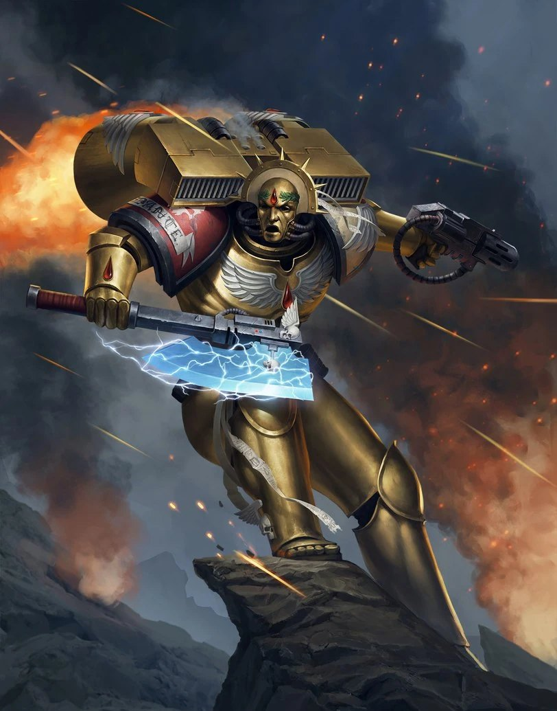
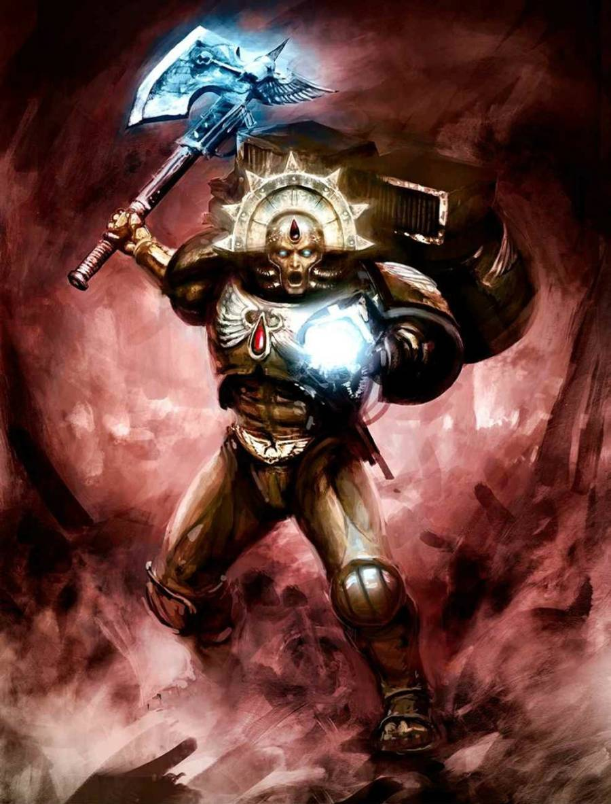

Commander Dante
| Commander Dante | |
|---|---|
| Lord Regent of the Imperium Nihilus | |
 The Lord of Angels in the golden armour of his office, bearing the Axe Mortalis Artwork © Games Workshop | |
| Lord Regent of the Imperium Nihilus | |
| Tenure | c. 000.M42 – present |
| Appointed by | Roboute Guilliman |
| Predecessor | Office created |
| Chapter Master of the Blood Angels | |
| Tenure | c. 899.M40 – present |
| Predecessor | Unrecorded (fell in the Kallius Insurrection) |
| Born | Luis, 447.M40, Baal Secundus |
| Status | Active; Primaris Space Marine since the early 42nd millennium |
| Allegiance | Imperium of Mankind |
| Homeworld | Baal system |
| Other titles | Lord of the Host; Bringer of Sanguinius' Light; Lord of Angels |
| Relatives | Arreas (mortal father) |
| Wargear | Death Mask of Sanguinius; Axe Mortalis; Perdition Pistol; Iron Halo; jump pack |
| Known for | The oldest living loyal Space Marine outside a Dreadnought; the defence of Baal; the Second War for Armageddon |
Dante, born Luis and called the Lord of Angels, the Lord of the Host and the Bringer of Sanguinius' Light, is the Chapter Master of the Blood Angels and, since the opening years of the 42nd millennium, the Lord Regent of the Imperium Nihilus, the half of the Imperium of Mankind cut off from Terra by the Great Rift. Born in 447.M40, he is held by the archives of the Adeptus Terra to be the oldest loyal Space Marine still living outside the sarcophagus of a Dreadnought, and he has commanded the Blood Angels for more than eleven centuries.[1][2]
Dante rose to command when the Chapter was nearly destroyed in the Kallius Insurrection of the late 40th millennium. Under him the Blood Angels recovered and fought some of the most celebrated campaigns of the age, among them the defence of Hive Acheron in the Second War for Armageddon, where the commanders of the Salamanders and Ultramarines ceded overall command of the Space Marines to him. In battle he wears the golden Death Mask of Sanguinius, and to the citizens of the Imperium he is the image of an angel descending on wings of fire.[1]
In 999.M41 Dante commanded the defence of the Blood Angels' home system against Hive Fleet Leviathan in the Devastation of Baal. The defenders were on the point of annihilation when the opening of the Great Rift and the arrival of the Indomitus Crusade under Roboute Guilliman saved them. Guilliman appointed Dante Lord Regent of the Imperium Nihilus, and Dante later crossed the Rubicon Primaris. He now directs the war on the dark side of the Rift.[2]
Early life
[edit]Luis was born to a man named Arreas on Baal Secundus, the second moon of Baal, and grew up among the nomadic salt-roamers of the Great Salt Waste, far from the moon's only settlement at Angel's Fall. He lost his mother as a child, and malnutrition and radiation left him small and scarred, as were most of his people. Chapter tradition holds that he survived the long journey to the Place of Choosing against all expectation, and that he was helped through the trials there by a golden figure that the Blood Angels identify with the Sanguinor.[1]
Luis was unremarkable in the trials, neither the strongest nor the fastest of the aspirants, but he endured them. During the year he spent entombed in the sarcophagus of transformation he did not dream quietly, as aspirants do, of the life and death of Sanguinius. Instead he cried out ceaselessly the names of fallen primarchs, dark gods and banished daemons, and the inside of the coffin lid was found scored by his nails. Some of the Sanguinary Priests took this as a sign that he would fall swiftly to the Black Rage. He emerged whole and composed, and took the name Dante.[1]
Rise to command
[edit]Dante was a line officer with no expectation of the highest office. The Blood Angels had been brought close to extinction once before, at Mackan during the Ghost War of the late 37th millennium, at the hands of the Black Legion. Some three thousand years later, in the Kallius Insurrection, they came close again. Three companies, including the 5th under the young Captain Dante, went to the aid of the successor Chapter of the Angels Numinous at Kallius' Landing, where a rebellion led by Traitor Astartes had spread across a sub-sector. The war ended in a three-day void battle in which Dante's warriors took and scuttled seven Chaos capital ships. Fewer than two hundred Blood Angels survived, and the Chapter Council was all but dead. The surviving Sanguinary Priests and Chaplains elected the last living captain, Dante, as Chapter Master.[1]
Chapter Master
[edit]
Under Dante the Blood Angels entered what their chroniclers call the most glorious age since the Great Scouring. Imperial records credit him with the banishment of the Bloodthirster Skarbrand at the Gates of Pandemonium, and with victory at Terion at the dawn of the 41st millennium over an alliance of the Night Lords and the Brotherhood of Darkness. A marble colossus of Dante, his hand outstretched in mercy, stands in Terion's rebuilt capital. Imperial savants note that no other servant of the Emperor is known to have set foot on so many of the Imperium's worlds.[1]
His later campaigns include:
- 746.M41: the dispatch of three companies to help the Ultramarines clear the remnants of Hive Fleet Behemoth, whose anti-Tyranid doctrines were passed on to the rest of the Chapter.
- 798.M41: the defeat of WAAAGH! Big Skorcha, whose space hulks reached the Baal system.
- 901.M41: the Stormraven assault that broke the decade-long Ork siege of the forge world Ironhelm at Stonehaven.
- 941.M41: the Second War for Armageddon, in which Dante led the Space Marine relief of Hive Acheron, captured the traitor governor Herman von Strab, and broke WAAAGH! Ghazghkull before Hive Tartarus.
- 955.M41: a three-week deadlock with the Necrons of the Silent King on Gehenna, ended when both sides turned on a Tyranid splinter fleet and then parted.
- 994.M41: the Blackfang Crusade, which drove the Orks from twelve worlds.
Behind the public record the Chapter endured trials it did not disclose. Dante held the Blood Angels together through the schism of the "Reborn Angel" Arkio on Sabien and the treachery of Chief Apothecary Caecus, who was deceived by Fabius Bile into creating the monstrous Bloodfiends. He summoned the successor Chapters to a conclave on Baal to secure the relics of their primarch and the future of their gene-seed.[1]
Devastation of Baal
[edit]When Hive Fleet Leviathan advanced on the Red Scar in 998.M41, Dante sacrificed the shield-worlds of the Cryptus System to delay it, fortified Baal and its moons, and sent out scores of strike forces to destroy the hive fleet's splinters. He called on the successor Chapters of the Blood Angels for aid, and every one of them answered except the Lamenters; even the Knights of Blood, declared Excommunicate Traitoris, came. The defenders beat back nineteen waves, each larger than the last. Five Chapter Masters fell, three of them at the Dome of Angels. The moons were stripped to bare rock, and the surviving Space Marines withdrew to the ruins of the Arx Angelicum for a last stand.[1]
At that moment the Great Rift tore open across the galaxy, and its storms swept the Baal system. No further waves came from orbit, but on Baal itself there were Tyranids enough to destroy the defenders many times over. Dante led one fighting retreat after another until the final perimeter broke, and as it broke the stars reappeared: the hive fleet was gone, and an Imperial fleet had come in its place. Roboute Guilliman and the Indomitus Crusade had arrived. What became of Leviathan's main body was uncertain. On the barren moon of Baal Prime, Tyranid skulls were found piled in the eight-pointed sign of the Bloodthirster Ka'Bandha, the Chapter's oldest daemonic enemy.[2][1]
Era Indomitus
[edit]Lord Regent of the Imperium Nihilus
[edit]
The rebuilding of Baal began at once. The gene-seed stores of the Chapter were recovered, the several thousand aspirants who had survived the siege were inducted into enlarged Scout companies, and Archmagos Belisarius Cawl brought tens of thousands of Primaris Space Marines of Sanguinius' line from the vaults of his ark, along with the machinery and genetors to make more on Baal. Guilliman named Dante Lord Regent of the Imperium Nihilus, with authority over Imperial forces on the far side of the Rift, a realm without the light of the Astronomican and cut off from Terra.[2]
Imperial chroniclers record that the appointment restored Dante's purpose. The burden of his centuries had weighed on him, and the Chapter had seemed to be burning out. Dante has sworn to cleanse his new realm of Chaos, however long it takes. His first great campaign as Lord Regent was the Angel's Halo, a counter-offensive to retake the Red Scar region from the surviving tendrils of Leviathan.[2]
Crossing the Rubicon
[edit]Some time after the Devastation of Baal, Dante chose to undergo the surgery of the Rubicon Primaris. He survived it, and his armour, jump pack and weapons were remade to fit his larger frame. Following Marneus Calgar, he was among the most senior Firstborn to take the step, and his example eased the acceptance of the Primaris brethren among the Blood Angels' successors.[3]
The final duty
[edit]Dante has spoken to his closest brothers of a vision recorded in the Scrolls of Sanguinius: that a lone golden warrior will one day stand between the Emperor and His destruction. Most Imperial scholars hold that the prophecy was fulfilled by Sanguinius himself aboard the Vengeful Spirit. Dante believes otherwise, and believes that the duty will fall to him before his death.[1]
Status
[edit]As of the latest records Dante is alive and in active command, as both Chapter Master of the Blood Angels and Lord Regent of the Imperium Nihilus. He is a Primaris Space Marine and is more than fifteen and a half centuries old. Crusade despatches place him at the head of Blood Angels battle groups in the Imperium Nihilus, hunting an unexplained threat that has destroyed isolated Imperial fleets on the dark side of the Rift.[2]
Character
[edit]Beneath the mask Dante's face keeps the beauty of Sanguinius' line, but it is lined by age, and his hair, once gold, is white. He is said to be weary, and without illusions: he does not expect the Imperium to win a final victory, and fights so that humanity may endure a little longer. He has never been known to remove the Death Mask outside the fortress-monastery. He is generous with honour, ceding command to other commanders when his warriors are better used elsewhere, and the squads seconded to him often mark their armour to commemorate the privilege.[1]
Wargear
[edit]- The Death Mask of Sanguinius, a golden mask said to bear the features of the primarch at the moment of his death. Its stare is said to paralyse the enemies of the Emperor.
- The Axe Mortalis, a power axe forged after the Horus Heresy by the artificer Metriculus, which has become the ritual weapon of the Chapter Master.
- The Perdition Pistol, an ancient Astartes-pattern inferno pistol made with lost techniques.
- An Iron Halo, golden artificer armour (since remade as Mark X plate) and a jump pack.
Timeline
[edit]| Date | Event |
|---|---|
| 447.M40 | Luis is born to Arreas on Baal Secundus |
| c. 899.M40 | During the Kallius Insurrection Dante, then a captain, is elected Chapter Master of the Blood Angels |
| 746.M41 | Dante sends three companies to help the Ultramarines clear Hive Fleet Behemoth |
| 798.M41 | The Blood Angels defeat WAAAGH! Big Skorcha before its hulks reach the Baal system |
| 901.M41 | A Stormraven assault breaks the Ork siege of the forge world Ironhelm |
| 941.M41 | Dante leads the Space Marine relief of Hive Acheron in the Second War for Armageddon |
| 955.M41 | A three-week deadlock with the Necrons of the Silent King on Gehenna ends |
| 994.M41 | The Blackfang Crusade drives the Orks from twelve worlds |
| 998.M41 | Hive Fleet Leviathan advances on the Red Scar and the Blood Angels prepare the defence of Baal |
| 999.M41 | The Devastation of Baal; the Great Rift opens and the Indomitus Crusade arrives under Roboute Guilliman |
| c. 000.M42 | Guilliman appoints Dante Lord Regent of the Imperium Nihilus |
| early M42 | Dante launches the Angel's Halo counter-offensive to retake the Red Scar region |
| early M42 | Dante undergoes the Rubicon Primaris |
See also
[edit]References
[edit]- ^ a b c d e f g h i j k Haley, Guy. Devastation of Baal (novel). Black Library, Chs. 15, 29. Codex Adeptus Astartes - Blood Angels (8th Edition), pp. 22-23, 26-27, 76. Games Workshop.
- ^ a b c d e f Psychic Awakening: Blood of Baal (8th Edition), pp. 8-9. Games Workshop. Haley, Guy. Dante (novel). Black Library.
- ^ Swallow, James. Deus Encarmine (novel). Black Library. Swallow, James. Deus Sanguinius (novel). Black Library.